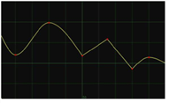
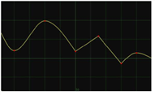

涂料表允许您轻松地重新定位、修剪和滑动剪辑，并为它们设置帧范围:
•
重新定位剪辑是指更改剪辑的位置，而不是内容或持续时间。在 “摄影表” 中，可以使用 “读取” 、 “时间偏移” 和 “时间片” 节点重新定位剪辑。
•
修剪剪辑是指从剪辑的头部或尾部删除不需要的帧。在 “摄影表” 中，可以使用 “读取” 和 “时间片” 节点修剪剪辑。
•
滑动剪辑是指更改所看到的剪辑内容，而不是位置或持续时间。在 “摄影表” 中，可以使用 “读取” 和 “时间片” 节点滑动剪辑。
•
设置剪辑的帧范围控制下游 AppendClip 节点从输入中使用的帧，当时间轴范围下拉菜单设置为
输入
,以及哪些帧被发送到 flipbook。在 “摄影表” 中，可以使用帧范围节点设置剪辑的帧范围。
使用读取和时间片节点重新定位、修剪和滑动剪辑
•
要重新定位剪辑，请将光标放在摄影表中的读取或时间片栏上，然后向左或向右拖动。
新的开始和结束帧编号显示在栏的两侧,
帧偏移
“读取” 或 “时间片属性” 面板中的控件会自动调整。
提示:
您也可以通过选择栏，双击剪辑旁边的第一个和最后一个帧编号，并在
x
弹出的字段。
•
要修剪剪辑，请将光标放置在栏的开始或结束处，然后向左或向右拖动。

新的开始或结束帧显示在栏旁边，并显示一条橙色线来表示原始帧范围。的
框架范围
“读取” 或 “时间片属性” 面板中的控件会自动调整。
提示:
您也可以通过选择栏、双击剪辑旁边的第一个或最后一个帧编号并调整剪辑中的编号来修剪剪辑
x
弹出的字段。
提示:
可以从剪辑的任意一端修剪的帧数受剪辑的原始帧范围的限制。然而，如果有必要，你可以通过保持修剪超出原来的范围
Ctrl
/
Cmd
同时修剪。
如有必要，可以更改剪辑手柄 (剪辑开始或结束后未使用的帧) 内的剪辑显示方式。调整
之前
和
之后
下拉菜单旁边的
帧范围
控件中的读或时间片属性来更改帧范围限制之前和之后发生的事情:
•
保持
-选择以显示帧范围的第一帧/最后一帧的静态图片。
•
循环
-选择重新开始，并在帧范围的第一帧/最后一帧之外继续循环帧范围。
•
反弹
-选择此选项可在帧范围限制之间来回播放帧范围。
•
黑色
-选择以在第一帧/最后一帧之外显示黑色帧。
•
要滑动剪辑，首先修剪剪辑以创建剪辑手柄。然后，将光标放在栏的下半部分上，向左或向右拖动。

剪辑手柄移动以指示剪辑的哪一部分可见。的
帧范围
和
帧偏移
“读取” 或 “时间片属性” 面板中的控件会自动调整。
提示:
可以滑动剪辑的帧数受剪辑的原始帧范围的限制。然而，如果有必要，你可以通过保持超过原来的范围
Ctrl
/
Cmd
当滑倒。
使用时间偏移节点重新定位剪辑
要重新定位剪辑，请将光标放在摄影表中的时间偏移栏上，然后向左或向右拖动。

新的开始和结束帧编号显示在栏的两侧,
时间偏移 (帧)
“时间偏移属性” 面板中的控件将自动调整。
TIP:
You can also reposition a clip by selecting the bar, double-clicking on the first and last frame numbers next to it, and adjusting them in the
x
fields that pop up.
使用帧范围节点设置帧范围
•
要设置剪辑的第一帧和最后一帧，请将光标放在摄影表中的帧范围栏上，然后向左或向右拖动。

新的开始和结束帧编号显示在栏的两侧,
帧范围
帧切换属性面板中的控件会自动调整。
•
要仅设置剪辑的第一帧或最后一帧，请将光标放置在栏的开始或结束处，然后向左或向右拖动。
新的开始或结束帧显示在栏旁边,
帧范围
帧切换属性面板中的控件会自动调整。
提示:
您也可以通过选择栏，双击剪辑旁边的第一个和最后一个帧编号，并在
x
弹出的字段。


 涂料表底部的按钮。
涂料表底部的按钮。


 
